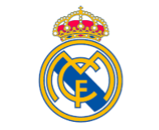
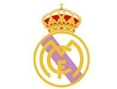

Esta pagina la hicimos para que conozcamos un poco mas la historia del Real Madrid sus hazañas en LaLiga o incluso en Champions league, Tambien conoceremos quienes fueron algunos de sus idolos, y el motivo de porque la historia del buen fútbol va de la mano con el Real Madrid.
Como se fundó el club
El 6 de marzo de 1902 fue registrado oficialmente como un club de fútbol, igualmente el origen fue en el 1900 pero las insuficientes y poco correctas crónicas de la época no permiten esclarecer con certeza lo que ocurrió hasta 1902. Existen dos hipótesis al respecto. La primera indica que se dividió en dos clubes, Nueva Sociedad de Fútbol y Sky fútbol, que se fusionarían en 1901 para dar origen a la Sociedad Madrid Fútbol Club. La otra hipótesis y posiblemente la más probable según las crónicas, dice que acabaría en 1901 con una reestructuración de esta Nueva Sociedad surgida en noviembre de 1900 para denominarse Sociedad Madrid Fútbol Club tras unírsele algunos integrantes de la Sociedad primera.
Escudo Actual
Primer Escudo

Escudo De 1963
Titulos Totales
En toda la historia el Real Madrid logró ganar 102 titulos en total con:
- 70 titulos nacionales
Los mayores idolos del club
- Cristiano Ronaldo 100 mejores goles en el Real Madrid
- Zinedine Zidane Sus mejores goles con el Real Madrid
- Sergio Ramos Mejores acciones defensivas
- Iker Casillas Sus mejores atajadas
Todos estos cumplieron roles importantes en el club y otros tuvieron hazañas impresionantes en los partidos.
Razones por las que es el la historia del buen futbol y el mejor equipo de la historia